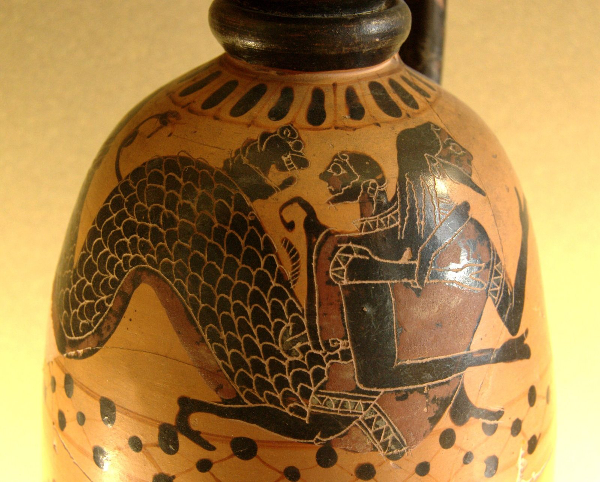

Project Nereus
The sea. Now.
Nereus, the old man of the sea. Hesiod calls him the one who is true and lies not
. To get a straight answer from him you had to hold on while he became a lion, a serpent, water.
Ship data shifts shape the same way. Nereus is our work on the sea: what really happened, and the means for anyone to check it.